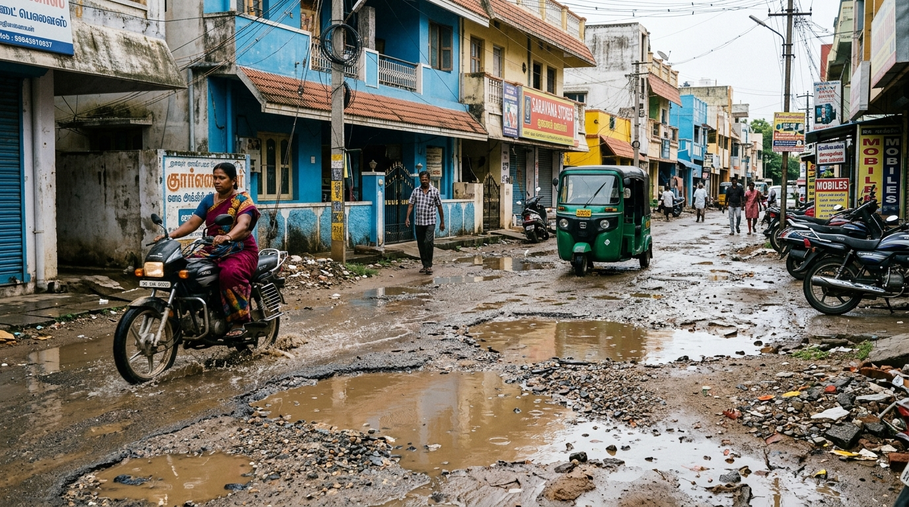
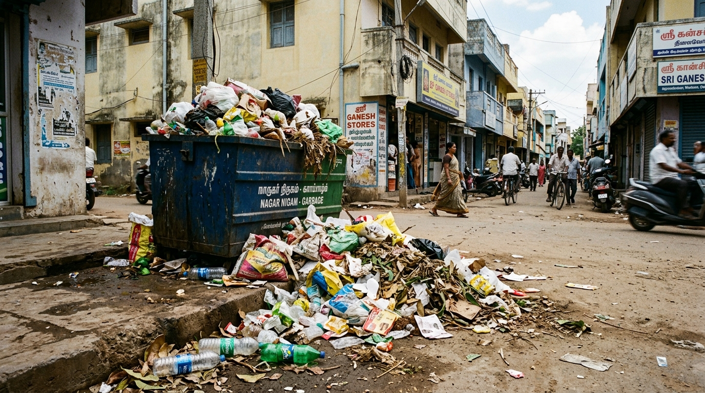
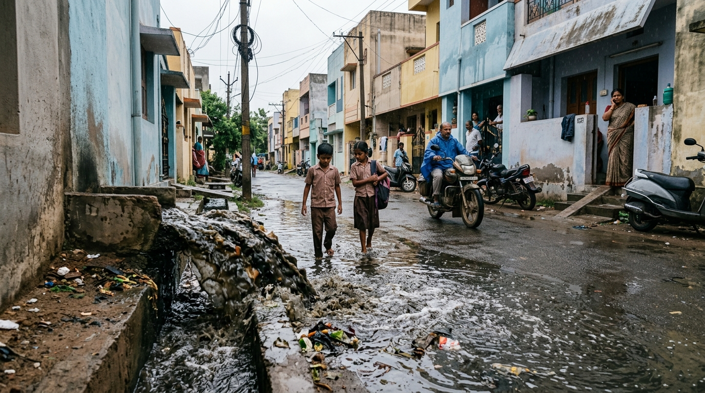
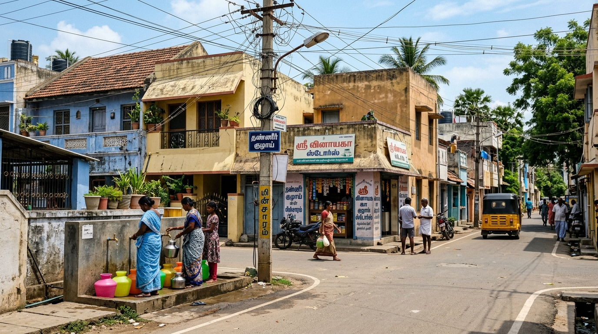

தஞ்சாவூர் தொகுதி ஜோதி நகர் பகுதி வாழ் மக்களின் குடிமைப் பிரச்சனைகளுக்கு உடனுக்குடன் தீர்வு காணவும், தூய்மையான, பாதுகாப்பான, நவீன வார்டை உருவாக்கவும் நாம் கரம்கோர்ப்போம்.
நிறுவனர் & தலைவர் - த.வெ.க
தீர்க்கப்பட்ட மக்கள் புகார்கள்
சாலை & குழி சீரமைப்பு பணிகள்
புதிய தெருவிளக்குகள் & பழுது நீக்கம்
ஜோதி நகர் த.வெ.க தீவிர தொண்டர்கள்




கீழே உள்ள முக்கிய பிரச்சனை வகையைத் தேர்வு செய்யுங்கள். நீங்கள் தேர்வு செய்யும் போது பின்னணியில் அதற்கான புகைப்பட ஆதாரம் மற்றும் தீவிரத்தன்மை மாறும்.
ஜோதி நகர் மெயின் ரோடு & குறுக்குத் தெருக்களில் குண்டும் குழியுமாக உள்ள சாலைகள், மழைநீர் தேக்கம், இருசக்கர வாகன விபத்து அபாயம்.
தெருமுனை குப்பைத் தொட்டிகள் நிரம்பி வழிதல், பிளாஸ்டிக் கழிவுகள் தேக்கம், உரிய நேரத்தில் குப்பை வண்டி வராத பிரச்சனை.
திறந்தவெளி சாக்கடைகள் நிரம்பி சாலையில் கழிவுநீர் பெருக்கெடுத்தல், கொசு உற்பத்தி, தொற்றுநோய் பரவும் தீவிர அபாயம்.
குடிநீர் விநியோகம், தெருவிளக்கு பழுது, மின்சாரக் கம்பி, மரக்கிளை அச்சுறுத்தல் அல்லது உங்கள் வார்டு சார்ந்த தனிப்பட்ட பொதுப் பிரச்சனை.
| குறிப்பு எண் (Ref ID) | தேதி (Date) | மனுதாரர் (Citizen) | தெரு / பகுதி (Street) | பிரச்சனை வகை (Category) | தீவிரம் (Urgency) | நிலை (Status) | செயல் (Action) |
|---|
மண்ணின் பெருமையும், மக்களின் உரிமையும் காக்க உருவான புரட்சி இயக்கம்.
தலைவர் - தமிழக வெற்றிக் கழகம்
சமூக நீதி, ஊழலற்ற நிர்வாகம் மற்றும் இளைஞர்களுக்கான புது அரசியல் வாய்ப்பை உருவாக்கி தரும் உறுதிமிக்க தலைமை.
தஞ்சை மத்திய மாவட்ட கழக செயலாளர்
தஞ்சை மத்திய மாவட்டம் மற்றும் தஞ்சாவூர் சட்டமன்றத் தொகுதியின் வளர்ச்சிப் பணிகளை முன்னெடுக்கும் கழக வழிகாட்டி.
வார்டு நிர்வாகிகள் & இளைஞர் அணி
ஜோதி நகர் வாழ் மக்களின் அன்றாட பிரச்சனைகளை மாநகராட்சி மற்றும் கழக தலைமைக்கு உடனுக்குடன் கொண்டு செல்லும் களப்பணியாளர்கள்.
பாகுபாடின்றி அனைவருக்கும் சமவாய்ப்புகளை உருவாக்குதல் மற்றும் அடித்தட்டு மக்களின் உரிமைகளை நிலைநாட்டுதல்.
நவீன தகவல் தொழில்நுட்பத்தைப் பயன்படுத்தி வெளிப்படையான, வேகமான மக்கள் குறைதீர்ப்பு சேவை வழங்குதல்.
அரசியல் மற்றும் சமூக சேவையில் படித்த, நேர்மையான இளைஞர்களைத் தலைமைப் பொறுப்புக்குக் கொண்டுவருதல்.